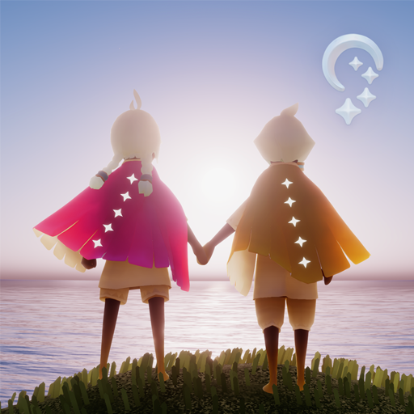

Temporada de Conmemoración
Ver másTemporada de iniciación
Ver másTemporada de los Momentos
Ver másTemporada Aviary
Ver másTomarse de la mano y emprender el vuelo en una aventura social inolvidable junto con sus seres queridos. Explora los siete reinos de este mundo bellamente animado con otros jugadores donde la compasión, la comunidad y el asombro te saludan en cada paso. Crea recuerdos enriquecedores mientras resuelves misterios, haces amigos y ayudas a otros en el camino. Sky es una experiencia de juego ganadora de múltiples premios creada por el estudio que creó Journey and Flower. ¡Descárgalo hoy!
Desde temporadas de aventuras, eventos del juego hasta un mundo en constante expansión de amistades y objetos coleccionables para desbloquear, hay mucho que hacer en Sky. Restaura la luz caída en las constelaciones ayudando a otros. Aquí tienes una introducción para empezar en el reino.
Temporada de Conmemoración
Temporada de iniciación
Temporada de los Momentos
El Ojo de Edén es la zona más peligrosa del reino de Sky. En su interior encontrarás el mayor reto al que te enfrentarás. El área está plagada de Dragones Oscuros, peligros y una fuerte Tormenta empeñada en absorber tu luz y debilitarte, mientras que te esfuerzas por llevar a las estrellas perdidas a su hogar. Solo los jugadores más habilidosos y fuertes obtendrán la recompensa. Completa este reino con ayuda de tus amigos y averigua si eres capaz de superar este desafío.